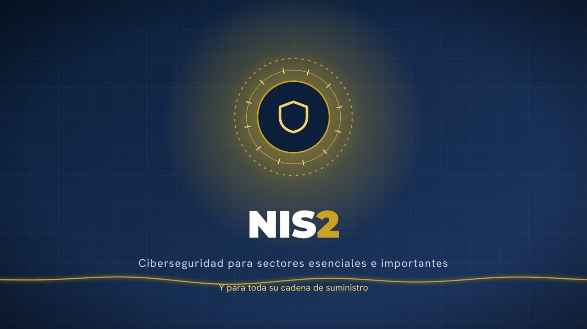

ARG
ARGARGOS › Normativa en 4 minutos › NIS2
NIS2 en 4 minutos: qué exige, multas, fechas y la situación singular de España
NIS2 es la directiva europea de ciberseguridad para los sectores esenciales e importantes y para toda su cadena de suministro. España no la ha transpuesto, pero los clientes ya la exigen en los contratos y quien opera en otros países ya está obligado allí. El vacío legal no protege.

- 0:00El ataque
- 0:15Las multas
- 0:38España
- 1:04NIS2
- 1:17Cuatro pasos
- 1:40Diez medidas
- 1:59Fechas
- 2:24Europa
- 2:51En España
- 3:19Qué hacer
Datos clave
- Multas de hasta 10 millones de euros o el 2 % de la facturación para entidades esenciales, y 7 millones para las importantes.
- Notificar en tres tiempos: alerta en 24 horas, notificación en 72 horas e informe final en un mes.
- La dirección aprueba las medidas y responde de ellas.
- Diez medidas del artículo 21; la seguridad de los proveedores es una de ellas.
- 17 de octubre de 2024: venció el plazo de transposición, que España incumple.
- 8 de julio de 2026: la Comisión lleva a España ante el Tribunal de Justicia.
- 6 de octubre de 2026: la disolución de las Cortes deja el anteproyecto sin tramitar; sigue vigente la normativa NIS de 2018.
- Tres CSIRT en España: INCIBE-CERT (privado), CCN-CERT (público) y ESPDEF-CERT (defensa).
Transcripción
Texto completo de la locución
0:00 · El ataque
Lunes, 6 de la mañana. Los sistemas no arrancan. Los ficheros, cifrados. El proveedor no contesta. ¿Quién avisa a quién y en cuánto tiempo?
0:15 · Las multas
La directiva europea NIS2 fija multas de hasta 10 millones de euros o el 2% de la facturación para las entidades esenciales y 7 millones para las importantes. Y obliga a notificar cada incidente significativo en tres tiempos, 24 horas, 72 horas y un mes. La dirección aprueba las medidas y responde de ellas.
0:38 · España
En España la situación es singular. No hay ley de transposición. El anteproyecto nunca llegó a las Cortes. La Comisión llevó a España al Tribunal de Justicia en julio de 2026. Sigue vigente la normativa de 2018, la antigua NIS. Pero los clientes ya exigen NIS2 en los contratos. Y quien opera en otros países ya está obligado allí.
1:04 · NIS2
NIS2 es la directiva europea de ciberseguridad para los sectores esenciales e importantes y para toda su cadena de suministro. El vacío legal no protege. La cadena entera responde.
1:17 · Cuatro pasos
Lo que exige, en cuatro pasos. Comprobar si se es entidad obligada, esencial o importante. Registrarse ante la autoridad nacional. Aplicar las 10 medidas de gestión de riesgos aprobadas por la dirección. Y notificar los incidentes significativos en plazo. La seguridad de los proveedores es una de esas 10 medidas.
1:40 · Diez medidas
Entre las 10 medidas, cuatro marcan la diferencia. Análisis de riesgos y políticas de seguridad. Gestión de incidentes y continuidad del negocio. Seguridad de la cadena de suministro. Y autenticación multifactor y cifrado. Artículo 21 de la directiva.
1:59 · Fechas
Fechas clave. 17 de octubre de 2024. Vence el plazo de transposición que España incumple. 8 de julio de 2026. La Comisión lleva a España ante el Tribunal de Justicia. 6 de octubre de 2026. La disolución de las Cortes deja el anteproyecto sin tramitar. Y hoy, el Esquema Nacional de Seguridad es el atajo.
2:24 · Europa
Fuera de España, NIS2 ya obliga. Alemania. Unas 29.500 entidades y la dirección responde personalmente. Italia exige las medidas de base desde octubre de 2026. Bélgica premia su marco CyberFundamentals. Portugal hace responsables a los gestores. Países Bajos, sin periodo transitorio. Y Dinamarca reparte la supervisión entre autoridades sectoriales.
2:51 · En España
En España, mientras tanto, hay tres equipos de respuesta. INCIBE-CERT para el sector privado, CCN-CERT para el público y ESPDEF-CERT para la defensa. INCIBE mantiene la tabla de entidades esenciales e importantes, la mejor referencia de alcance. El Centro Criptológico Nacional publicó un perfil para encajar NIS2 en el Esquema Nacional de Seguridad, y su categoría alta cubre buena parte de las medidas.
3:19 · Qué hacer
¿Qué hacer ya? Analizar el alcance, aplicar las diez medidas, preparar la notificación en 24 horas y exigir lo mismo a los proveedores. ARGOS lo verifica de forma continua, con sonda sobre los sistemas reales y evidencia lista para el auditor y para el cliente. NIS2. La ciberseguridad se demuestra.
Preguntas frecuentes
¿NIS2 ya obliga en España?
España no ha aprobado la ley de transposición: el anteproyecto no llegó a las Cortes y sigue vigente la normativa de 2018 (NIS1, Real Decreto-ley 12/2018). Pero los clientes ya exigen NIS2 en los contratos y quien opera en otros países de la UE ya está obligado allí.
¿Cuáles son las multas de NIS2?
Hasta 10 millones de euros o el 2 % de la facturación para las entidades esenciales, y 7 millones para las importantes. Además, la dirección aprueba las medidas y responde de ellas.
¿En cuánto tiempo hay que notificar un incidente?
En tres tiempos: alerta temprana en 24 horas, notificación en 72 horas e informe final en un mes, para los incidentes significativos.
¿Qué exige NIS2, en resumen?
Cuatro pasos: comprobar si se es entidad esencial o importante, registrarse ante la autoridad nacional, aplicar las diez medidas de gestión de riesgos aprobadas por la dirección y notificar los incidentes significativos en plazo.
¿Cómo saber si mi empresa está afectada?
INCIBE mantiene la tabla de entidades esenciales e importantes, la mejor referencia de alcance en España. Y conviene recordar que la cadena de suministro también responde: la seguridad de los proveedores es una de las diez medidas.
¿Sirve el ENS para prepararse para NIS2?
Sí. El Centro Criptológico Nacional publicó un perfil para encajar NIS2 en el Esquema Nacional de Seguridad, y su categoría alta cubre buena parte de las medidas. Hoy el ENS es el atajo.
Fuentes oficiales
- Directiva (UE) 2022/2555 (NIS2) (EUR-Lex)
- Reglamento de Ejecución (UE) 2024/2690 (EUR-Lex)
- Real Decreto-ley 12/2018, de seguridad de las redes y sistemas de información (BOE)
- INCIBE-CERT
- CCN-CERT
Sigue con
 Reglamento de IA
Reglamento de IAEl Reglamento de IA en 4 minutos: niveles de riesgo, fechas tras el Ómnibus y qué hacer en España
 Data Act y DGA
Data Act y DGAEl Data Act y la DGA en 4 minutos: de quién son los datos de los productos conectados
 ENS e ISO 27001/27701
ENS e ISO 27001/27701El ENS y las ISO 27001 y 27701 en 4 minutos: la llave del mercado público
Locución y música generadas con inteligencia artificial (art. 50 del Reglamento de IA). Información general, no constituye asesoramiento jurídico; situación a noviembre de 2026, según las fichas de regulación de Software in a Box. Clips de vídeo con licencia de Envato.
Para incrustar esta presentación en otra web: <iframe src="https://argos.softwareinabox.eu/normativa/nis2/presentacion/?embed=1" width="960" height="540" allow="autoplay; fullscreen" title="NIS2 en 4 minutos: qué exige, multas, fechas y la situación singular de España"></iframe> con un enlace a esta página.